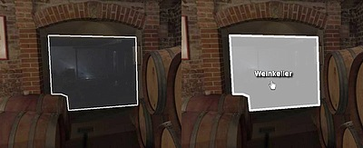

标签介绍
preview标签
定义一个当全景图片还未加载完毕时的一个小的预览图片。这个预览图片一定要小（文件小，分辨率小），以更快的加载出来。
| 属性名 | 属性全名 | 类型 | 默认值 |
|---|---|---|---|
| url | preview.url | String |
view标签
view标签包含了当前视图的相关信息。 在xml中，它可以用来设置启动视图的配置。 观看方向将通过hlookat和vlookat属性来配置，以及fov的设置。
<view
hlookat="0.0"
vlookat="0.0"
fov="90.0"
fovmin="1.0"
fovmax="179.0"
maxpixelzoom=""
/>| 属性名 | 属性全名 | 类型 | 默认值 |
|---|---|---|---|
| hlookat | view.hlookat | Number | 0.0 |
| 球面坐标的水平方向。典型的范围从-180到180.view本身不会值不会环绕360.值0.0只想pano图像的中心 | |||
| vlookat | view.vlookat | Number | 0.0 |
| 球面坐标的垂直方向。典型的范围从-90到90. | |||
| fov | view.fov | Number | 90.0 |
| 0.0-179.0 | |||
| fovmin | view.fovmin | Number | 1.0 |
| 最小的fov值，这将在pano中限制缩放 | |||
| fovmax | view.fovmax | Number | 179.0 |
| 最大的fov值，这将在pano外限制缩放 | |||
| maxpixelzoom | view.maxpixelzoom | Number | |
| pano图像的最大像素放大因子。这将根据pano的分辨率和当前的查看窗口（比如，1.0 = 限制为100%缩放）来限制fov，而源图像的像素缩放将不可见。 | |||
| mfovratio | view.mfovratio | Number | 1.333333 |
| 当使用fovtype=MFOV设置时，最大屏幕尺寸计算的大小比例。默认情况下，将使用4:3屏幕（4/3 = 1.3333）的比例 | |||
| distortion（旧版：fisheye） | view.distortion(旧版：view.fisheye) | Number | 0.0 |
| 鱼眼畸变效应（0.0-1.0）.该值是在正常直线图像和扭曲的鱼眼视图之间的插值 0.0 = 无失真/直线性 1.0 = 完全失真 有两种鱼眼模式：正常（view.stereographic="flase"） 球面(view.stereographic="true") | |||
action 标签
使用action标签，可以定义krpano操作。
这些操作与其他脚本或编程语言编程中的函数或过程类似。
可以从各个地方调用这些操作——从事件，从其他action，也可以从外部源（javaScript，插件）调用接口。
这里有两种action类型：
- normal krpano action -flash和html5
- javaScript krpano action -仅html5
Normal krpano action
<action name="..." scope="..." args="">
action1();
action2();
</action>
在普通的action标签中，可以放置krpano的action调用的序列。当调用该action时，这些action调用将一个接一个地执行。
这里是krpano中action的语法和调用约定： krpano action/function 的调用约定
当调用action时，可能会传递一些参数。 对于访问arguments/parameters有两种可能：
- 通过占位符替换：（老版方法）
- 为了在action的代码中获取给定的参数，可以使用%0-%99的表单的数字占位符。
- %0 是action自身的name，%1 是第一个参数，%2是第二个参数，以此类推。
- 在代码中，这些占位符可以被用于任何地方，任何时候。
- 在解析和执行action代码之前，所有的占位符将被其参数值替换。
- 当给定的占位符没有参数时，将使用“null”值。
- 在action中使用%，必须使用%%。
- 通过参数/变量映射（推荐的）
- 对于具有本地范围的操作，可以将args属性添加到action标签中。例如： <action ... args="var1,var2,var3">
- 在args属性变量中，可以定义给定action参数的变量名（通过逗号隔开）。
- 每个action参数将被映射到本地范围内的一个新变量，该变量的名称是在args属性中设置的。
- 这些变量可以正常的使用，就像action代码中定义的其他的变量一样。
- 当变量没有赋予值时，默认值为null
- 使用变量映射在处理包含引号或逗号字符的值时非常。在这种情况下，正常的placeholder替换可能是有问题的。
javaScript krpano actions（html5 only）
<action name='...' type="Javascript">
<![CDATA[
....
javaScript code
....
]]>
</action>通过这种形式的action，可以直接使用javaScript代码来执行。这可能对于复杂的事情会处理的比较快。javaScript actions 尽在krpano HTML5 viewer中使用。
javaScript actions中预置了以下对象和方法：
- krpano: krpano接口对象（get，set，call，trace，...）
- args[]: 传递的参数。类型为数组。
- caller： 调用action的调用者，一般是<layer>,<plugin>,<hotspot>。
- resolve(str):一个用于解析/获取krpano变量/路径值的方法。它的工作方式类似于默认的krpano变量解析——当给定的变量/路径存在时，将返回值，而当没有返回时，传递的值将按原样返回。
- actions:访问内置的krpano action对象（例如：call actions.tween(...),这样调用了名为tween的action）。
| 属性名 | 属性全名 | 类型 | 默认值 |
|---|---|---|---|
| name | action[name].name | string | |
| action的名称。当没有设置name时，系统会自动生成一个name | |||
| type | actions[name].type | String | |
|
action 类型： type=“” （默认） Normal krpano actions type="Javascript" Javascript krpano actions |
|||
| scope | action[name].scope | String | |
|
在action中，定义的scope会生成以下变量： global： 新变量将会添加到全局作用域中。 其他action或者代码将可以使用这些变量。 当重新使用变量名时，这可能有问题，特使是当变量类型在function之间有所不同时。 local 新的变量仅存在于被调用的action作用域中。 当action完成或者调用其他action时，在本地作用域内定义的所有变量将不可用。 action越复杂，使用的临时变量越多，使用本地作用域来避免干扰其他action就显的越有意义。 localonly 和scope=local一样，但不同的是，所有访问仅在默认情况下仅引用本地范围本身。 只能通过全局对象访问全局作用域。 parent 从调用者那里使用作用域。 当调用当前action的action有一个局部作用域时，则此action也可以在当前action中使用访问。 private：Name 为action定义一个私有的作用域范围。 这个作用域将由一个自定义的唯一NAME来引用。 这个作用域在多个action调用之间保持活跃，并且可以在多个action之间共享。 scope=localonly 所有访问仅指范围本身。 未完成翻译 |
|||
| args | action[name].args | String | |
| 匹配action对象参数到本地变量。要求使用local scope 。 | |||
hotspot
hotspot是全景的一块区域，在鼠标悬停或者点击时发生反应。它们可以被用来加载其他的全景，链接到其他的url，改变view。
目前有两种类型的hotspot：
- polygonal hotspot（多边形热点）
这些区域由一组点来定义的。

- Image Hotspot(图片热点)
这些是图像或flash影片作为热点

热点的类型由其属性定义：
- 如果设置了url属性，那么热点类型为image hotspot
- 如果没有定义url，并且定义了一些点，那么热点类型为多边形热点。
<hotspot name="..."
type="image"
url="..."
keep="false"
visible="true"
enabled="true"
handcursor="true"
maskchildren="false"
zorder=""
style=""
ath="0.0" atv="0.0"
edge="center"
zoom="false"
distorted="false" rx="0.0" ry="0.0" rz="0.0"
width="" height=""
scale="1.0"
rotate="0.0"
alpha="1.0"
onover=""
onhover=""
onout=""
ondown=""
onup=""
onclick=""
onloaded=""
/>
<hotspot name="..."
keep="false"
visible="true"
enabled="true"
handcursor="true"
capture="true"
style=""
alpha="1.0"
fillcolor="0xAAAAAA"
fillalpha="0.5"
borderwidth="3.0"
bordercolor="0xAAAAAA"
borderalpha="1.0"
onover=""
onhover=""
onout=""
ondown=""
onup=""
onclick=""
onloaded=""
>
<point ath="..." atv="..." />
<point ath="..." atv="..." />
<point ath="..." atv="..." />
...
</hotspot>
| 属性名 | 属性全名 | 类型 | 默认值 |
|---|---|---|---|
| hotspot[name].name | string | ||
| 当前热点的name值。 | |||
| type | hotspot[name].type | string | imgae |
|
hotspot的类型： image：使用url属性后，默认为image text ： 将文字作为热点。 |
|||
| url | hotspot[name].url | String | |
| 热点的图片路径。支持的文件类型有：JPG，PNG，GIF 和 SWF（flash）。注意，当url属性被设置后，那么热点类型就为图片热点，而不能是多边形热点。 | |||
| keep | hotspot[name].keep | Boolean | false |
| 当加载一个新pano后，是否保持这个热点 | |||
| visible | hotspot[name].visible | Boolean | true |
| 是否显示热点 | |||
| enabled | hotspot[name].enabledvisible | Boolean | true |
| 启用hotspot元素来接收鼠标事件。当设置为‘false’时，鼠标事件将被路由到底层元素。 | |||
| handcursor | hotspot[name].handcursor | Boolean | true |
| 当鼠标在hotspot元素上时，显示一个指针。 | |||
| maskchildren | hotspot[name].maskchildren | Boolean | false |
| 当设置为true时，父元素之外的所有子元素将被裁剪/屏蔽 | |||
| zorder | hotspot[name].zorder | String | |
| 热点元素的深度的排序。这个值可以是任何字符串或数字。所有带有zorder设置的热点元素将按给定值进行排序。当没有设置时，代码顺序是没有意义的，取决于浏览器的加载完成顺序。注意，这是重叠元素的一个重要设置。HTML5注意：zorder应该是0-100之间的值，没有负值。 | |||
| style | hotspot[name].style | String | |
| 从一个或多个<style>加载属性。这样可以减少xml的代码，要使用多个style，请用|字符分割样式名称。注意：在样式中定义的属性不能覆盖在图层、插件、热点定义的属性。 | |||
| style | hotspot[name].style | String | |
| 从一个或多个<style>加载属性。这样可以减少xml的代码，要使用多个style，请用|字符分割样式名称。注意：在样式中定义的属性不能覆盖在图层、插件、热点定义的属性。 | |||
|
ath atv |
hotspot[name].ath hotspot[name].atv |
Number | 0.0 |
| 热点的球面坐标。在这里，热点图像将边缘设置点上对齐。 | |||
| edge | hotspot[name].edge | String | “center” |
| 热点元素的边缘/锚点。可能值：lefttop，left，leftbottom，top，center，bottom，righttop，right，rightbottom | |||
| zoom | hotspot[name].zoom | Boolean | false |
| 当缩放时，热点图像的大小是否与pano一起变化。 | |||
| distorted | hotspot[name].distorted | Boolean | false |
| 在3D空间中，热点图像是否随当前pano/view一起扭曲。当扭曲设置为true后，使用rx，ry，rz来旋转三维空间的热点。注意：1，当启用时，将使用1000像素的大小作为像素的大小的参考。这1000像素覆盖了三维空间中90度的视场。2：扭曲热点不能也不应该有子元素，他们可能会不能正确显示。3：将Flash插件显示为失真的热点应该是可能的，但不能直接与他们交互。在这种情况下，插件不会直接显示，只有一种‘截图’的图像。 | |||
| rx/ry/rz | hotspot[name].rx/hotspot[name].ry/hotspot[name].rz | Number | 0.0/0.0/0.0 |
| 3维旋转的角度除以X/Y/Z轴。（轴顺序：Y-X-Z）。只能在distorted=true时使用。 | |||
| width/height | hotspot[name].width/hotspot[name].height | String/String | |
| 热点元素的目标大小-图像将按比例缩放这可以是绝对像素值，也可以是相对（屏幕宽度或屏幕高度）的百分比值。当未设置时，将使用加载图像的大小。此外，还可以使用特殊的值“prop”通过宽高来缩放图像（例如，将宽度或高度设置为一个值，另一个设置为prop。width=“500” height=“prop”）。注意：当使用扭曲热点时，大小与内部基准大小有关，其中1000像素覆盖了90度的视场。 | |||
| scale | hotspot[name].scale | Number | 1.0 |
| 热点元素的缩放 | |||
| rotate | hotspot[name].scale | Number | 1.0 |
| 热点的旋转角度。注意，distorted不能设置为true | |||
| alpha | hotspot[name].alpha | Number | 1.0 |
| 热点的透明度。0.0-1.0之间。即使设置为0.0，元素依然存在并且可以点击，如果像隐藏它，可见属性必须设置为false。 | |||
| fillcolor/fillalpha | hotspot[name].fillcolor/hotspot[name].fillalpha | int/number | 0xAAAAAA/0.5 |
| 向多边形热点区域填充颜色和透明度 | |||
| borderwidth/bordercolor/borderalpha | hotspot[name].borderwidth/hotspot[name].bordercolor/hotspot[name].borderalpha | Number/int/Number | 3.0/0xAAAAAA/1.0 |
| 多边形热点的边框宽度，颜色，透明度 | |||
| onhover | hotspot[name].onhover | action event | |
| 当鼠标移动到热点之上时触发该事件 | |||
| onout | hotspot[name].onout | action event | |
| 当鼠标移出热点时触发该事件 | |||
| ondown | hotspot[name].ondown | action event | |
| 当鼠标点击热点，并且在按下的时候，触发该事件 | |||
| onup | hotspot[name].onup | action event | |
| 当鼠标点击热点，并且在抬起的时候，触发该事件 | |||
| onload | hotspot[name].onload | action event | |
| 当加载热点图片完成时触发该事件。 | |||